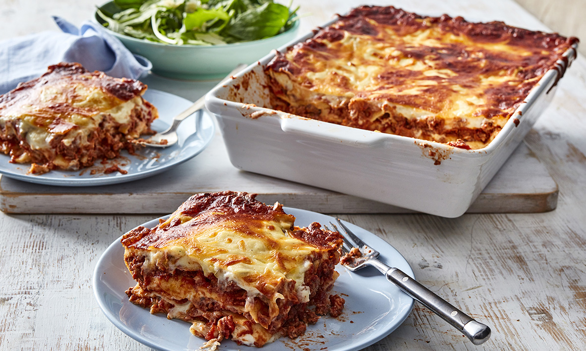

Lasanje retsept
| Koostisosad |
Kogus |
| Sibul |
2 tk (hakitud) |
| Petersell |
1 kimp (hakitud) |
| Hakkliha |
400-500g |
| Porgand |
2 tk (riivitud) |
| Purustatud tomatid |
400g |
| Vesi |
2 dl |
| Punet |
1 tl |
| Või |
50g |
| Nisujahu |
60g |
| Piim |
1l |
| Riivitud juust |
100g |
| Soola |
| Musta pipart |
Valmistamine:
- Valmista hakklihakaste: pruunista pannil hakkliha, sibul ja porgand. Lisa petersell, tomatid ja vesi. Maitsesta soola ja pipraga. Hauta kastet kaane all 10-15 minutit, maitsesta punega.
- Valmista juustukaste: sulata potis või, lisa jahu ja prae kergelt läbi. Lisa korraga piim ja kuumuta pidevalt segades keemiseni. Keeda 5-6 minutit, pidevalt vispliga segades, kuni kaste on ühtlane ja veidi pakseneb. Maitsesta soola ja pipraga. Tõsta pott tulelt ja sega juurde riivitud juust.
- Võta ahjukindel vorm ja tõsta põhjale kiht juustukastet. Laota peale kiht lasanjeplaate, siis hakklihakastet ja peale juustukastet. Korda 2-3 korda, kuni toiduained on otsas.
- Pealmine plaatide kiht kata juustukastmega ja puista peale veel riivitud juustu. Küpseta 225-kraadise ahju allosas 30-40 minutit.
- Enne serveerimist lase veerand tundi seista - siis on lasanjet parem lõigata.
| Nami-Nami |
